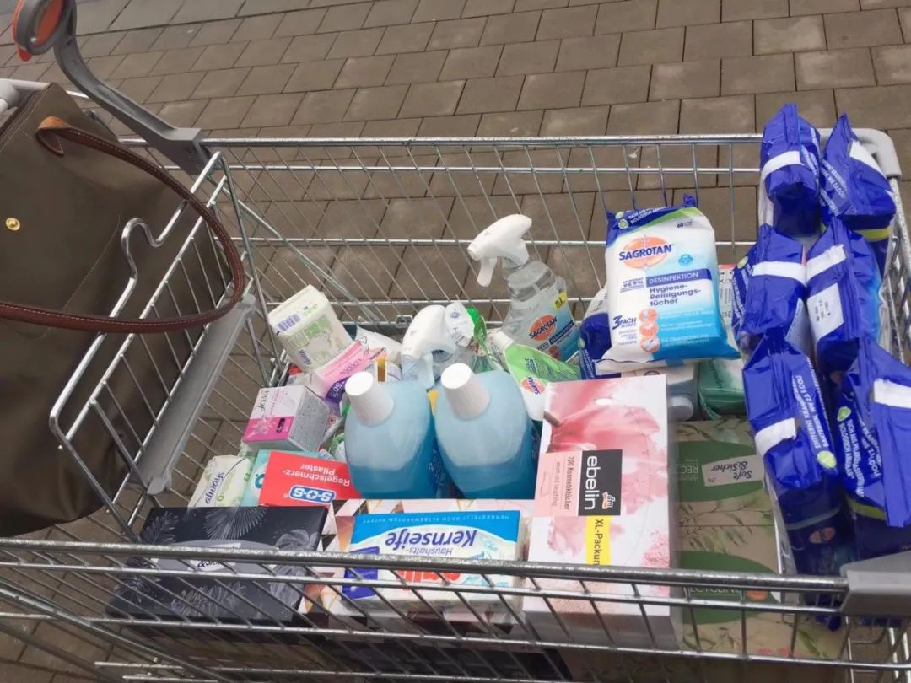
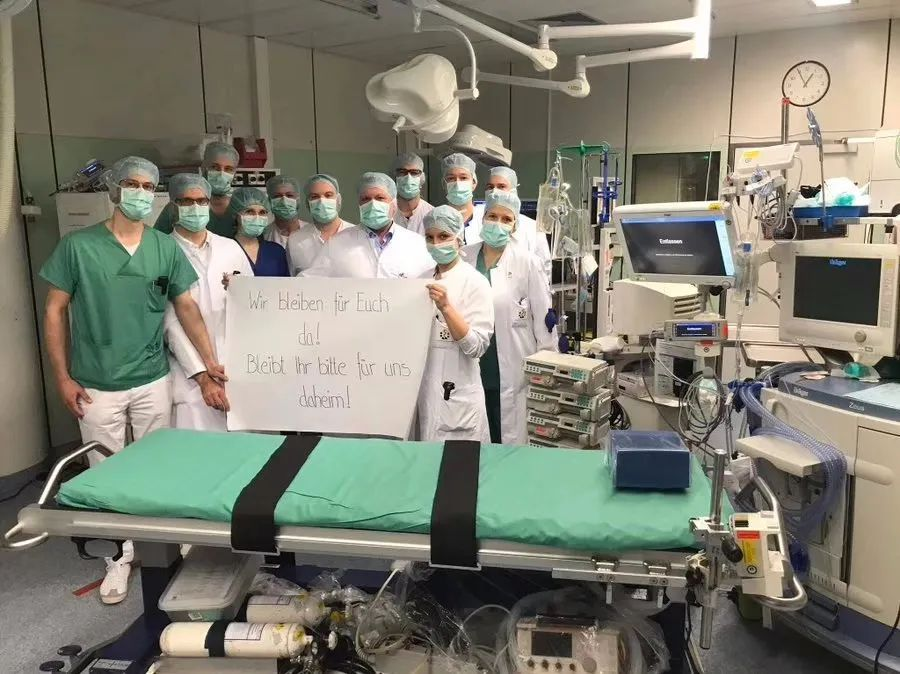

地球青年丨我在柏林街头看到手牵手跳舞的人们，仿佛一场末日狂欢
原文链接 备份链接 以下文章来源于地球青年图鉴 ，作者地青 △ “身在疫国人”第6期德国街访完整视频 截至德国当地时间3月18日19点，德国确诊人数有11979人，死亡28人。3月18日，德国总理默克尔发表演讲：“这是二战以来德国面临最 …

德国罗伯特·科赫研究所RKI所长威勒（Wieler）预计，德国在两三个月内确诊人数将会超过一千万。我不希望这个数字成真，德国并不像国内的社区，有居委会大妈、有网格员关心着你，给你送吃的送喝的，如果诺因基兴镇的食物断货，我也想好了，早早在院子里种了些蔬菜，自给自足。
记 者 | 吴 雪
受访者 | 虞 馨
在德国南部有一个名叫诺因基兴的小镇，这里人口不到1万人，距离巴伐利亚州的埃尔兰根仅20分钟车程。2016年，我辞掉北京的设计师工作，带着三岁半的女儿，投奔派遣至此工作的老公，一家三口便长居于此，至今四年。3月16日，我接到了女儿学校的邮件通知，要求所有学生停课，居家作业，这个决定，让我悬着的心一下子落地了。
我一直对德国的防疫措施“提心吊胆”，学校没人戴口罩、防疫措施更没有，每次看着女儿背着书包出门，我都“如坐针毡”，“害怕感染”的担心一直持续到放学。在德国朋友口中，我听到最多的一个德语词汇是“Keine Panik”，意思是“不惊慌，别恐慌”。
德国街头排队抢购物资的民众
3月20日，停课第4天，我拿出作业清单叮嘱女儿完成，间歇，我出门到附近的DM超市采购，手机弹出了一则新闻：这一天，德国确诊人数已经破1.2万，德国总理默克尔在电视讲话中说，新冠疫情是德国二战以来的至暗时刻。
邻居和我说话时躲在了门后
每天看新闻是我多年来保持的习惯。一月中旬开始，中国媒体开始报道新冠肺炎，每天都有新的坏消息传来。不在国内的我，除了焦虑地刷新闻，拼命劝沈阳的长辈别出门，过年不聚会，洗手戴口罩，也做不了什么。
当时全世界的中国人都在各国掘地三尺地找口罩、防护服、护目镜，往中国寄。德国华人也不例外，当时我联络了当地的超市采购了多批口罩，可以证实的是，德国的口罩和防护服基本被中国人买空了，甚至因为物资紧俏，谈好的价格往往第二天都不作数，也是常事。
但捐赠物资的事情，我没跟多久，因为家里出了意外状况。1月2日，我们一家三口驱车去捷克滑雪，在滑雪场，老公突发视野扭曲，后到埃尔兰根眼科急诊检查，确诊为视网膜脱落，急需手术。而在老公住院期间，奶奶病逝。分身乏术的我，再没有多余精力跟到底了。
虞馨老公在埃尔兰根就诊的眼科医院 受访者供图
德国第一例确诊病例，正是出现在我们居住的巴伐利亚州，当时德国新闻上并无详细报道，直到1月27日，我们才知道病人的一点情况。患者男性，33岁，Webasto公司员工，因为和一位来自中国分公司的女同事共同参加培训而感染。
很快，Webasto（德国一家汽车零配件品牌）宣布关闭总部大楼，所有员工居家办公，同时德国卫生部门扩大检测范围，检测更多的员工和他们的家人，近200人进行两周的居家隔离。客观来说，控制得还不错，没有出现“猪队友”，数据上看，把Webasto公司摁住了之后，德国也没有新的增长。2月12日，Webasto总部重新开门，门口还打出大大的“欢迎回来”标语，一切如常。
那时候，德国民众并不知道病毒的可怕，他们认为这个病毒离自己还很遥远。明显的分水岭是在2月23日的狂欢节。狂欢节假期前两天，意大利有暴发的趋势，我开始感觉不对劲了。狂欢节第二天早上，我马上预见性地在亚马逊下单了防疫物资，50个一包的口罩，已经从原先的10欧元涨到了40欧元；诺因基兴镇DM超市的消毒液、喷剂、纸巾还很齐全，当时我只拿了两三瓶。

最开始在DM买了一车消毒用品，后来就买不到了 受访者供图
果然，我的判断是对的，北威州的Heinsberg（海因斯贝格县）最早确诊了一例参加狂欢节的夫妻，直接导致Heinsberg及周边一千多人被隔离。紧接着2月28日，德国确诊人数从53例，一下子增长到了600多例，短短两三周新增患者覆盖全德达到5300多人。那个周五，我再去超市采购，所有的米类、意大利面、罐头、消毒用品货架全部空了。
与抢购物资正相反，我身边的德国朋友普遍都很淡定，他们认为这就是一个比较严重的流感，跟感冒一样，会治愈的。一位嫁给德国人的朋友向我吐槽，老公和公公每天给她“洗脑”：要求她出门不要戴口罩，会被别人认为是病人；更不要去囤货，这完全没必要。为此家里还爆发了“辩论大战”。他们还说，就算不幸被感染上了，那也是上帝的选择，不如听天由命、随遇而安。

第二次去时，超市纸制品货架抢购一空 受访者供图
但你说德国人真的一点都不怕吗？事实证明并不是，我有一个朋友住的房子是一梯两户，之前有一个快递被邻居代收，回来之后，我找对方拿快递，敲了很久的门，对方都没开门，过了几分钟，我家的门铃响了，邻居猫着门缝露出半个脸说：你的快递我给你放门口了，然后迅速转身回家，把门关起来了。我个人认为，德国人还是有些恐慌的，恐慌的根本还在于他们对于新冠肺炎的认知不到位。
去医院看诊时，没人戴口罩
对于病毒的正确认知，也许不仅是德国民众不知道，德国政客、德国医生也不知道。德国新闻在报道新冠疫情时，大多是一句话带过：新增多少，死亡多少。很少有一些详细的描述，只有数字，作为观众，确实难对病毒有具象的认识。
德国压根也没有宣传过一些防疫知识，新闻报道最多的就是没必要戴口罩，勤洗手是最有效的预防方法，这么说的背后，其实是德国已经没有足够的口罩供应人手一份了。按照德国卫生部部长的说法，让民众太过了解这个病毒，容易引发恐慌，所以最好不知道。但我认为了解这个病毒，不就是在提醒人们，躲开握手礼、大型聚会、人流密集活动等高危时刻吗？
收治新冠病人的医院ErlangerHautklinik 受访者供图
事实比我想象的还糟糕。1月13日，老公出院，此后一直居家办公。不久后，我们去埃尔兰根大学医院复查，这里刚刚有一个皮肤科的医生在参加慕尼黑研讨会时被确诊。这位医生隔离的综合楼，距离我老公就诊的眼科，仅相隔一个大花园的距离。我们当时很担心，备了口罩和消毒液前往，在医院入口处发现有消毒液供应，但医院门诊没有一个人戴口罩，包括医生、护士。
之前在群里和华人聊，也看到过网上因为华人戴口罩遭遇歧视的新闻，内心万般纠结。到底戴还是不戴？戴了，怕被别人说成“异类”；不戴，又怕被传染。几番思想斗争，直到看诊结束，口罩一直被我揣在兜里，没好意思拿出来戴上。现在回头想想，真是一次冒险的经历。不过，这两天，医院似乎有了新变化。

德国的警察、消防、医护人员们在各地手举标语拍照，上面写着“我们为你们留在这里，请你们也为我们留在家里！ 受访者供图
因为身体原因，我去了附近的诊所，之前这家诊所，口罩没有一个人戴。但去了之后，发现所有的医生、护士全部戴上了口罩，患者没有戴，但在分诊的前台，递上医保卡后，会自觉站在1米远的位置等候。这是我来德国四年第一次在诊所看到他们戴口罩。那天，我很安心地戴上了口罩，就诊的医生还夸我：没看出来，你的眼睛还挺大。
截至此时，德国政府的核心疾控机构RKI将新冠威胁评级定为“温和”。联邦政府并未有任何具体、强制的防控措施，只是号召大家少出门，如果有人发热，还是按照原来就诊的流程，联系你的家庭医生，做检查后，分流轻重症病人，轻症和密切接触者居家隔离，重症送到医院治疗。我有一个朋友，在看望儿子回来后，确诊新冠肺炎，目前就是居家隔离。

图片来源｜路透社
我也明白，每个国家的国情不同，防疫方法也不同，但至少在已确知的病毒知识上，公众有权力知晓必要的防疫知识，比如“病毒在不同表面存活的时间”“借鉴了哪些防控手段”德国政府多少该给民众一个心理准备，“我们很可能也会有这么一天”。
但很遗憾并没有，我们只能在自己的可控范围内，做好防护。最近能不出门就不出门了，即便出门，口罩手套也都会戴上，进出门都会自觉消毒。以前和朋友经常去的一家面包房，这个时期的生意甚至比平时还要好。那家面包房的服务员从不用夹子拿面包，更没人戴口罩和手套，我身边的华人妈妈们果断决定再也不去了。
停课停工，回国不是明智的选择
女儿在停课之前，我每天都非常担心，她上小学二年级，一个班级24个人，出门前，会嘱咐她千万别拿手揉眼睛，没事就喷些酒精在手上，如果学校没有备酒精，就用自己的。因为是女孩子，还会听话地照着实施，同班的男孩子就不好说了，洗手、喷酒精一般比较难。
最让我心惊胆战的一次是，埃尔兰根的一所学校，有一个学生确诊新冠肺炎，学校当天就关闭停课了，而恰巧我女儿同桌的哥哥姐姐全在那所学校上课，感染源的圈子一下缩小了，我一整天都心神不宁，还好，那天同桌被要求居家隔离，没去上学。

Ｈeinsberg一家幼儿园4个孩子确诊，该地区所有幼儿园和学校都已关闭 图｜dw.de
实际上，巴伐利亚州的政府从上周就开始讨论“要不要停课”，默克尔考虑到经济的影响，是不同意停工停学的。但3月12日，德国的“钟南山”Christian Drosten博士改变他以往的观点并支持学校停课是个转折。巴伐利亚州的州长也很有决断性，决定从3月16日，也就是周一开始，全州停学不停课三周，高年级上网课，低年级发邮件布置作业。妈妈群得知这个消息时，像过年一样，大家纷纷写道：终于停课了。
孩子们放假了，爸爸妈妈也只能在家办公，老公所在的自动化公司，除了个别工厂必须在岗，建议有孩子的居家办公，没孩子的随个人意愿。德国没有父辈带娃的习惯，双职工的德国妈妈们，比较麻烦，托班关闭了，公益机构在开，但只针对医生、消防、警察等特殊群体，她们曾想过邻居之间互助一下，一替一天轮换着在家带娃，但这实施起来并不容易。

从周一开始到复活节假期结束，所有学校停课关门 受访者供图
我们在德国没有别的亲人，又不可能随便雇个保姆带娃，这个小家庭运转的前提是，一定要保证我们两个人都不生病，否则就只能把孩子送到福利机构，我不敢往下想。有许多华人朋友请了探亲假回国，说实话，我和老公也想过“要不要回国”的问题，但商讨下来发现，这并不是一个明智的选择。
首先，德国政府认为接受教育是孩子的基本义务，作为家长不能阻止孩子接受教育，因此，出海关相对困难；其次，就算能过海关，一路上感染的风险也很大，到了之后，何时回来又是一个问题，万一荒废了上学、耽误了工作，也不划算；最后，德国回国的单程机票已经涨到了3万元/张，来回一家三口要花费至少18万元，更是承担不起。不如就安心待在这里，配合当地的防疫政策。
德国街头开始有人戴起了口罩
我们所在的巴伐利亚州算反应迅速的，率先宣布灾难事件，启动了灾难保护模式。所有医护医学院学生准备，警察国防军消防员后备役约45万随时待命。医院腾病床，再新添1000台呼吸机，虽然德国的医疗资源储备已经是欧洲最好。3月17日，开始关闭大众娱乐场所，餐馆可以营业，但就餐间距必须1.5米，而且整个餐馆不得超过30人；3月18日，开始关闭商场，生活超市改为每天都营业，包括周日开到晚上10点；药店、卫生用品超市、银行、加油站照常营业。
巴伐利亚州还准备了100亿欧元准备金，扶持因为灾难受到损失的企业。但并不是所有的州都是这样。比如，北威州没有停学，仍然正常上课；柏林从3月18日（周三）才开始停工停学，公共场所还是该干什么干什么。有人在社交媒体上分享的图片，天气好的时候，慕尼黑市中心的公园，挤满了晒太阳的人，附近的冰激淋店甚至比往常的客流还要多。

德国总理默克尔发表电视讲话 图｜法新社
德国人心太大了，默克尔急了。3月19日，她在15年任职内首次就特殊情况发表全国电视讲话，她说，最难的是，我们所有人都不能碰面，而这本来是理所当然的。她还表示，虽然德国医疗体系完善，但如果在短时间内收治太多重症患者，医院将不堪重负。目前尚无针对该病毒的疗法或疫苗。的确，德国对疫情的防控能力暴露了很多该国治理体系的弊病。
截至当地时间20日23时许，德国累计确诊感染新冠肺炎人数已突破1.9万。鉴于此，巴伐利亚州和萨尔州当天宣布实施限制公民出行自由的宵禁令。规定从3月21日0时起至4月3日24时止，居民除因采购必需品、就医、上下班等必要事由外一概不得外出；如果不是一个人外出，则只允许和家人同行。同时，该州所有的餐厅和啤酒花园在此期间必须关闭，仅允许外送服务。
德国终究要靠德国人来拯救，疫情周期会持续半年？一年？甚至更长？我不知道，也没人知道，就像薛定谔的猫，无从知晓。作为一名华人，我每天的生活，没有太多变化，女儿的德语我辅导不了，只能靠她自觉。至于“停课三周之后，会不会复学”，“如果持续延长，低年级的老师，会不会也开始直播网课了”，这个谁也说不准。
12月底圣诞节，虞馨带女儿去慕尼黑美术馆看画展 受访者供图
德国罗伯特·科赫研究所RKI所长威勒（Wieler）预计，德国在两三个月内确诊人数将会超过一千万。我不希望这个数字成真，德国并不像国内的社区，有居委会大妈、有网格员关心着你，给你送吃的送喝的，如果诺因基兴镇的食物断货，我也想好了，早早在院子里种了些蔬菜，自给自足。我们无法做到像德国人一样心大，但至少，得有足够的心理准备，熬过这个未知的艰难时期。


· 我在海外 | 在伊朗的中国人：坐上回国包机前，都经历了什么？
新民周刊所有平台稿件， 未经正式授权
一律不得转载、出版、改编或进行
与新民周刊版权相关的其他行为，违者必究


原文链接 备份链接 以下文章来源于地球青年图鉴 ，作者地青 △ “身在疫国人”第6期德国街访完整视频 截至德国当地时间3月18日19点，德国确诊人数有11979人，死亡28人。3月18日，德国总理默克尔发表演讲：“这是二战以来德国面临最 …
原文链接 备份链接 国内出现首例境外输入关联病例。美国单日新增超过7000。德国病死率不到0.4% 文 |**《财经》数据研究员 徐进 ** 图 |《财经》视觉中心 编辑 |** 郝洲** 一、国内出现首例境外输入关联病例 图1 今日国 …
原文链接 备份链接 希腊电视里轰炸似的呼吁大家待在家里，和上海说要屏牢有点类似。但自由散漫的民众并不买账，尤其是年轻人，还是该干嘛干嘛。说白了，你出不出门，纯粹靠自觉。 口述 | 吴女士 整理 | 金 姬 我是80后上海人，因为大学本科 …
原文链接 备份链接 我不太确定学校停课的时间会不会继续延长。因为我们在群里对此次意大利疫情的预测是不太乐观的。 记 者 | 应 琛 受访者 | 王艺林 上午在宿舍自习完之后，我习惯性地打开新闻网站了解当天意大利新冠肺炎疫情的最新情况。我 …
原文链接 备份链接 图片来源：图虫 特约作者：钱伯彦 “ 德国所有医保机构年均380亿欧元的支出在欧洲一枝独秀，远超法国的230亿欧元和英国的140亿欧元。 ” 新冠病毒加速肆虐老迈的欧洲大陆。 就公开的确诊数而言，意大利一度超越韩国成海 …